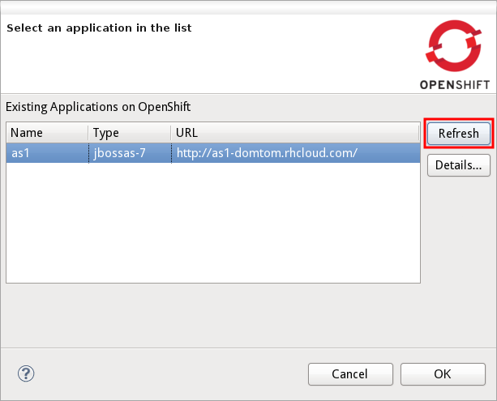
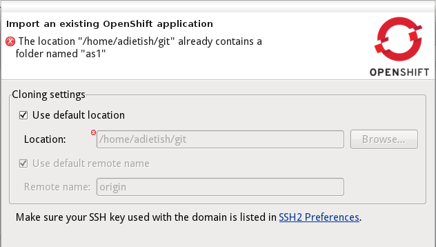

General |
|
| Support for Eclipse Juno | JBoss Tools for OpenShift is now able to run in Eclipse 4.2/Juno. We migrated our plugins to this new platform. |
OpenShift import wizard |
|
| Refreshing available applications |
If you had started JBoss Tools for OpenShift into a blank account, that had no domain nor applications, the tooling
could not discover the domain and applications you had created outside Eclipse (in the OpenShift WebUI or with the rhc command line tooling). We added a refresh button in the wizard, that allows you to discover and import applications that you created outside Eclipse.  |
| Revalidating wizard settings going back and forth |
When creating/importing an OpenShift application to your workspace, you have to provide a destination-folder that the wizard would clone to.
If the destination folder already has a project with the very same name, the wizard would not let you finishing it.
Moving/removing the conflicting folder outside Eclipse did not help since the wizard did not check the location again, the error kept popping up.
You had to close the wizard and restart your operation. We fixed this in Alpha1, the wizard will now check the folder once you switch pages back and forth.  |
OpenShift Server |
|
| Publishing DIY applications |
Before Alpha1 publishing local changes to DIY applications errored with an NPE. We now fixed this nastyness. |
| Publishing by Drag'n Dropping |
Previously, when a user performed a drag-and-drop action to publish a project it was ignored. In Alpha1 you'll now be able to publishing your project to your OpenShift cloud by drag and dropping your project to the OpenShift server adapter. |
|
|
|
OpenShift Express REST client |
|
| REST Client published to maven central |
In JBoss tools, we developed a java client library for the OpenShift REST service. The client is hosted at github, you'll find it at
https://github.com/openshift/openshift-java-client. Since Alpha1 we now also provide the client library as maven artifact from Maven central. To add it to your maven project, you will simply add the following to your maven pom: <dependency> <groupId>com.openshift</groupId> <artifactId>openshift-java-client</artifactId> <version>2.0.0</version> </dependency>If you want to learn how to use our client library, you will want to read our blog and check the code examples at show-domain-info: openshift-java-client in a nutshell |